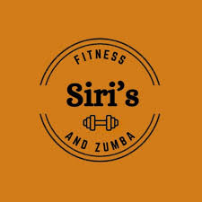
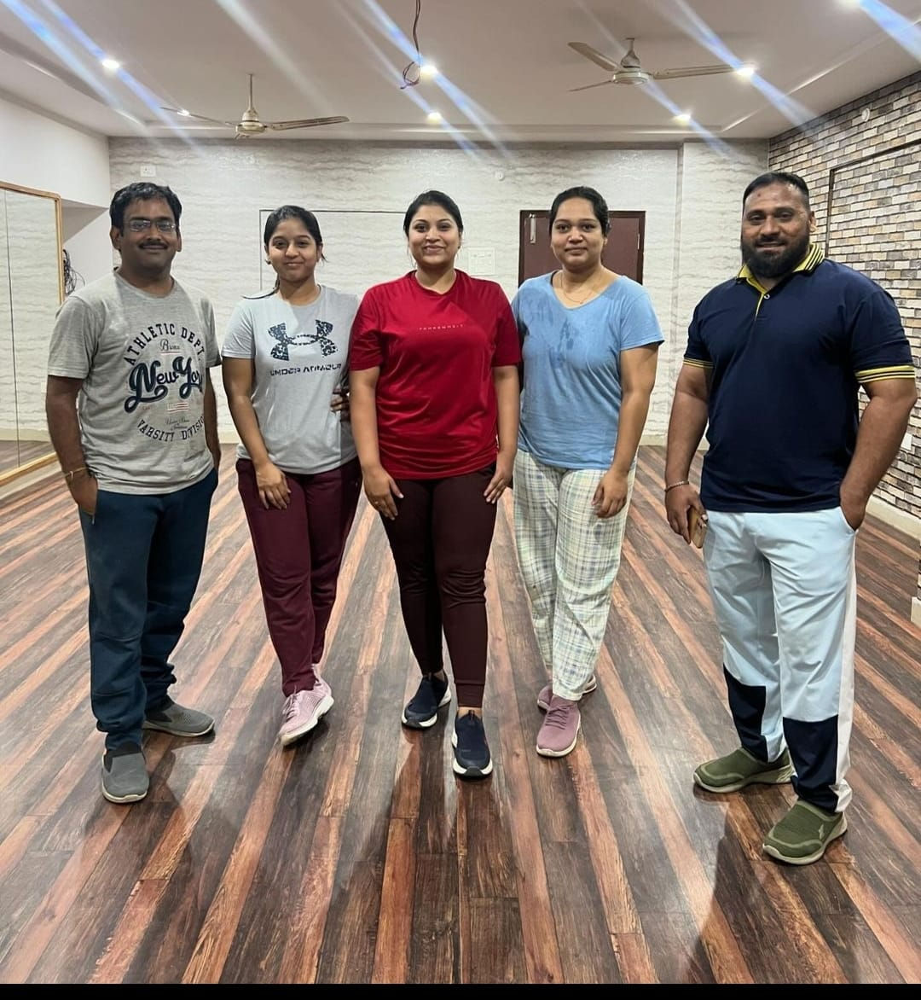
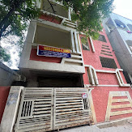
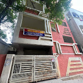

Siris Fitness Dance Studio & Events is a fitness center located in Hyderabad, Telangana. The average rating of this place is 5.00 out of 5 stars.
Functional training is a term used to describe exercises that help you perform activities in everyday life more easily.
These exercises typically use the whole body — definitely multiple muscles — and emphasize core strength and stability.  
By mirroring the movements of your daily life, like squatting, reaching, or even carrying a heavy object, building functional strength can help increase your quality of life and reduce your risk of injury.

By mirroring the movements of your daily life, like squatting, reaching, or even carrying a heavy object, building functional strength can help increase your quality of life and reduce your risk of injury.
Working day: Monday - friday
feel free to contact us for packages